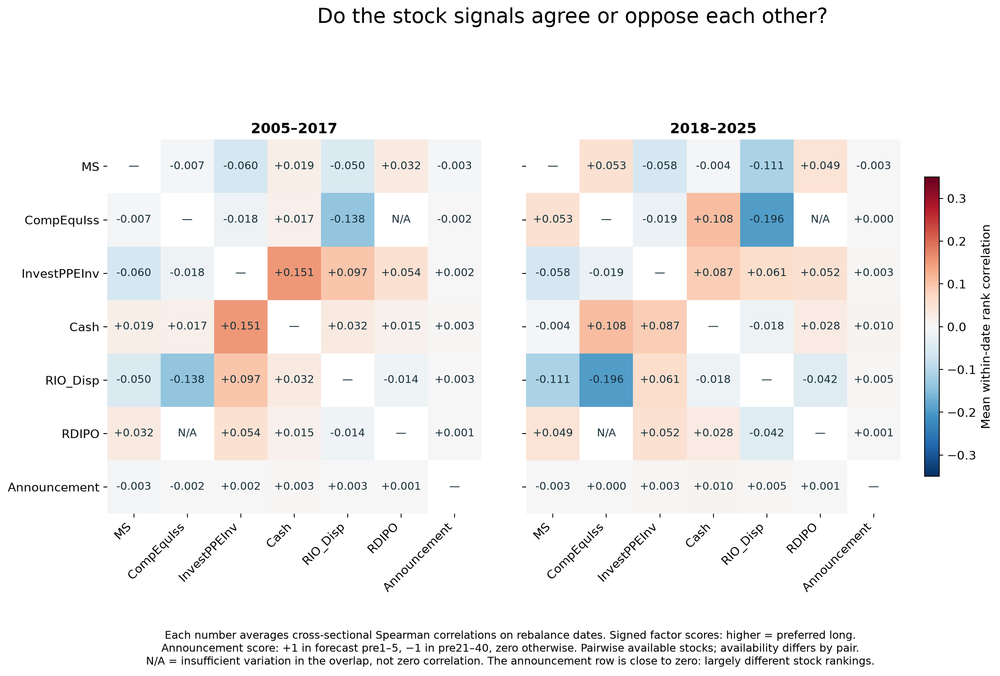
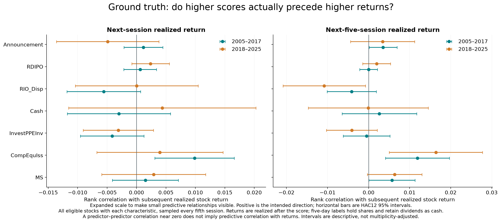
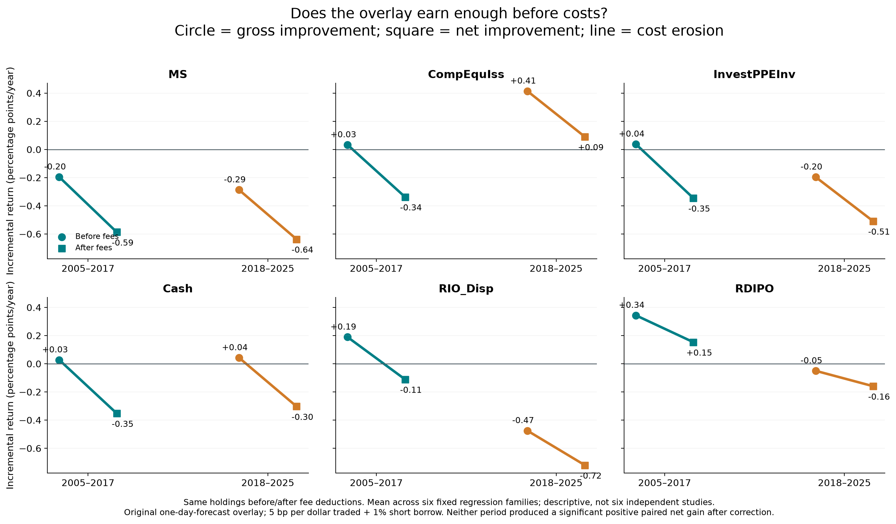
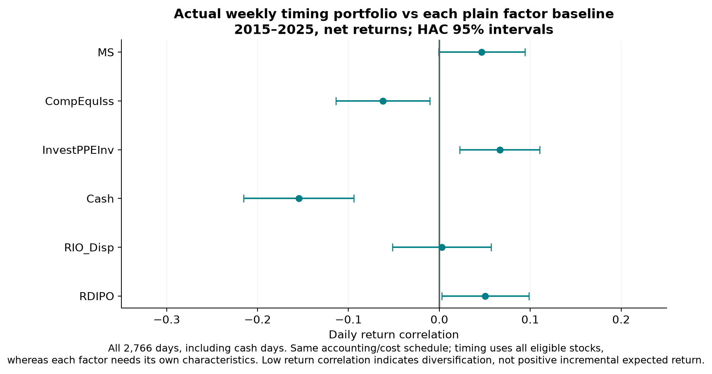

The main problem is weak and unstable incremental return forecasting, followed by extra trading costs—not strongly negative correlation between stock signals. The clock improves conditional variance prediction, but this did not become reliable profitable position sizing. Earlier than2018 looks brighter in some diagnostics, not as a general, statistically supported incremental-alpha regime.
All results are retrospective. Models use only prior-year data, but related historical results were already examined. The follow-up diagnostics, five-day labels, cost veto and2018 split were introduced after the initial result and are labeled accordingly. No strategy was tuned to win before2018.
The announcement row is close to zero. This rejects strong opposition of stock rankings as the general explanation. N/A for composite issuance versus RDIPO reflects insufficient variation in their overlapping universe; it must not be read as zero. Each pair can have different available stocks, so this descriptive matrix is not a covariance matrix to feed to an optimizer.

Ground truth is the observed next-session or next-five-session stock return, measured after the signal. Correlations are within-date ranks and then averaged across rebalance dates. This removes common market-level movements from the cross-sectional comparison. The signal has a small positive five-day relationship, but many intervals are wide. Earlier results are not uniformly stronger: composite issuance strengthens, while investment and institutional ownership/disagreement weaken. These unadjusted intervals are descriptive.

For a fixed ridge model trained on five-day returns, the horizontal axis is the extra forecast from including the clock. The vertical axis is actual five-day signed payoff minus the baseline forecast. Both are centered within date and leg. A well-calibrated addition should follow the dashed diagonal. The noisy, often flat/nonmonotone curves show why larger forecast tilts need not generate larger actual gains. This is a diagnostic of the existing model, not a new parameter search.
Each circle is gross incremental P&L on the actual holdings, and its square is after trading and borrow fees. The average spans the six fixed regression families; it is not a selected trading portfolio. Some gross increments are already negative, and fees erode small positive increments. The pre-2018 comparison preserves the same trained model rules and continuous portfolios; no refitting at the cutoff.

This is return correlation, not stock-score correlation. The fixed timing portfolio uses all eligible names; factor portfolios require their own characteristics. All days, including cash days, are retained. Low or negative return correlation can improve diversification, but does not establish positive expected incremental return from changing individual factor holdings.

Signal redundancy: corr(factor score, announcement score)
Predictive information: corr(score at t, realized future return)
Added forecasting value: E[future return | baseline features, clock]
− E[future return | baseline features]
Gross portfolio improvement: E[(w_with_clock − w_without_clock)' r]
Net improvement: gross improvement − additional trading/borrow costs
Being uncorrelated with an existing signal is not enough.
The proposed weight change must predict a positive realized payoff.
Portfolio variance change = 2 Cov(baseline return, incremental return)
+ Var(incremental return).
In2015–2025, the primary added forecast worsened mean-squared prediction error in34/36 comparisons. Its median within-date/leg rank correlation with actual returns was−0.00318, and all incremental calibration intervals included zero. These figures are noisy and do not prove the true effect is negative. Holding the baseline mean forecast fixed, using the clock-conditioned variance improved risk scores in36/36 comparisons after the stated Holm correction. Variance-only portfolio changes were small; the harmful position changes mostly came from conditional means.
2015–2025, same local universe and weekly execution. 5bp per dollar bought/sold,1% annual short borrow. Target exposure is100% long and100% short, except cash periods. One basis point is0.01%; variance is the square of daily standard deviation. RDIPO is a concentrated sensitivity with at least5 shorts, not a diversified strategy.
| Factor | Gross mean (bp/day) | Net mean (bp/day) | Net variance (bp²/day) | Daily standard deviation (bp) | Invested fraction | Costs (bp/day) |
|---|---|---|---|---|---|---|
| MS | 1.566 | 0.922 | 1967.063 | 44.352 | 1.000 | 0.644 |
| CompEquIss | 1.297 | 0.659 | 2671.366 | 51.685 | 1.000 | 0.638 |
| InvestPPEInv | -0.481 | -1.084 | 1329.569 | 36.463 | 1.000 | 0.603 |
| Cash | 0.658 | 0.012 | 10604.777 | 102.980 | 1.000 | 0.646 |
| RIO_Disp | 0.189 | -0.613 | 5028.917 | 70.915 | 1.000 | 0.802 |
| RDIPO | 0.704 | 0.373 | 7710.387 | 87.809 | 0.426 | 0.331 |
The quoted paper monthly returns are not comparable verified net returns. Source-rank terciles, availability screens, vintages and cost definitions differ. Some local baselines have positive net averages; positive averages alone do not establish statistically reliable profitability.
Mean across six primary regression families; each gross/net difference uses the identical underlying holdings. Numbers are percentage points per year.
| Factor | Gross increment (pp/year) | Extra fees (pp/year) | Net increment (pp/year) |
|---|---|---|---|
| Cash | -0.030 | 0.346 | -0.376 |
| CompEquIss | 0.277 | 0.350 | -0.073 |
| InvestPPEInv | -0.206 | 0.341 | -0.547 |
| MS | -0.341 | 0.377 | -0.718 |
| RDIPO | -0.111 | 0.153 | -0.265 |
| RIO_Disp | -0.279 | 0.269 | -0.548 |
| period | family | Positive /36 models | Median incremental return (pp/year) | Positive significant /108 tests |
|---|---|---|---|---|
| 2005_2017 | cost_guard | 16 | 0.000 | 0 |
| 2005_2017 | h1 | 7 | -0.249 | 0 |
| 2005_2017 | h5 | 3 | -0.129 | 0 |
| 2018_2025 | cost_guard | 15 | -0.003 | 0 |
| 2018_2025 | h1 | 7 | -0.402 | 0 |
| 2018_2025 | h5 | 2 | -0.119 | 0 |
There is no positive adjusted incremental success in either period across the72 target-horizon candidates or108 candidates including the cost veto. The standalone original timing strategy has a notably strong2015–2017 interval (+7.20% annual net mean), but−1.97% in2005–2014 and−2.40% in2018–2025; the full2005–2017 average is only+0.146%. The shorter three-year episode does not establish a stable earlier regime.
Implemented a hard veto for all36 directly trained five-day models: execute the announcement target only when its exact trading fee is strictly lower than the no-cycle target from the same current holdings, including exits. Otherwise use the no-cycle target. This accepts only5.42% of active decisions in2015–2025. Seventeen increments are positive; none is significant after correction. The largest observed gain is only3.38bp/year.
The rule guarantees a cheaper chosen trade at the comparison instant. It does not guarantee lower costs over a separately evolved full baseline path: only3/36 accumulated lower trading fees, and the maximum increase was0.675bp/year. A cumulative fee-budget policy would additionally change execution/exposure and has not been claimed or tested here.
Primary study and mathematical allocation rule · Direct five-day sensitivity · Cost-veto results · Predictor/ground-truth correlations · Forecast diagnosis · Period comparison and correction details · Verified sources · Reproduce everything
Daily return costs/holdings, regression algorithms, chronological labels and independent absolute-dollar accounting were validated separately. Borrow availability, impact, financing and source restatements remain unobserved. The allocation controls diagonal tracking risk, not full covariance. All plotted confidence intervals are pointwise; they should not be read as simultaneous confirmation of discovered alpha.